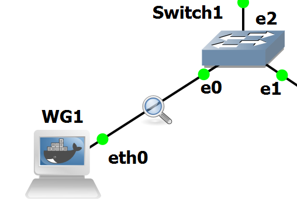
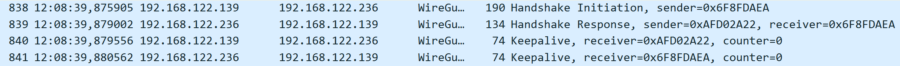
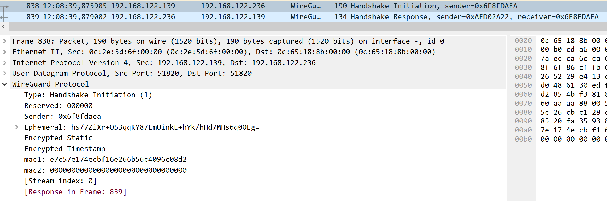
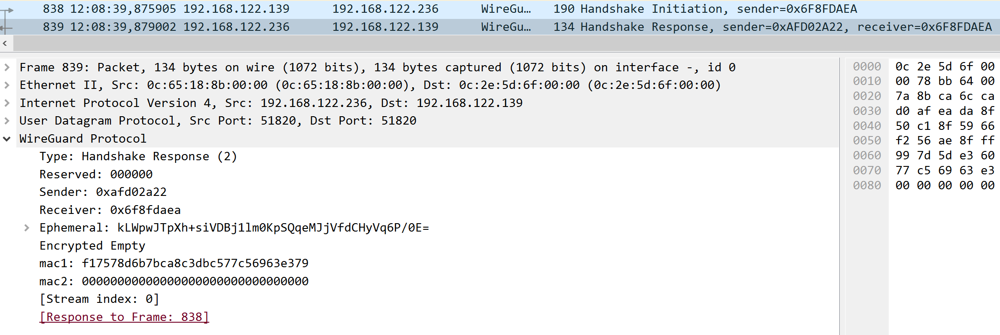
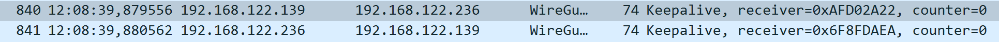
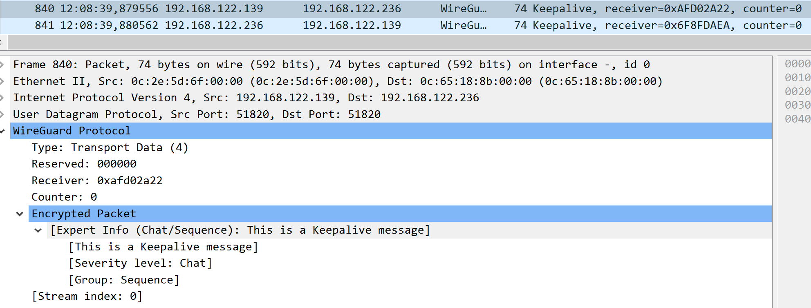
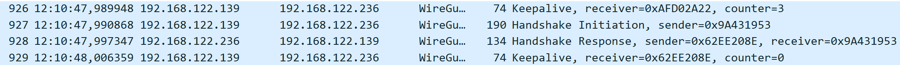
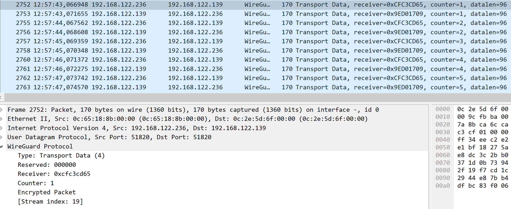
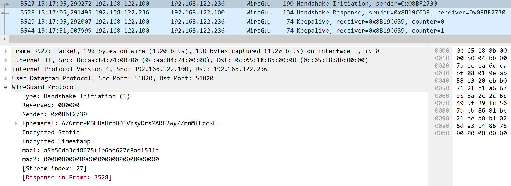
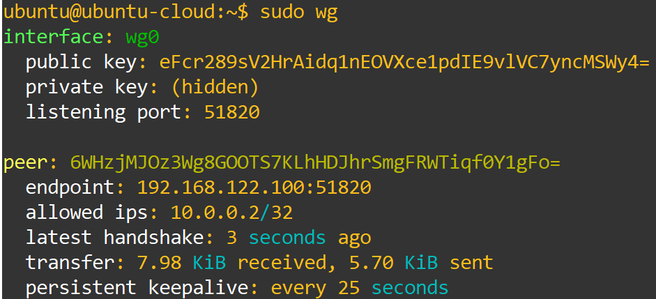

Laboratory Experiments
Now that our topology is set up and running smoothly, we will perform some experiments and tests to see WireGuard's most important features and capabilities.
WireGuard´s Handshake
We will begin our experiments by studying WireGuard's handshake. As we have seen in the previous section, WireGuard's handshake is a very simple 1-RTT handshake that forms a connection by sharing several elements, such as an ephemeral Diffie-Hellman key, its encrypted static public key, a sender index, and a timestamp for replay protection.
Now let's evaluate whether this is correct and whether it corresponds to the actual handshake performed.
To perform this experiment, ensure that all WireGuard interfaces are turned off, and then place a Wireshark probe on the connection between WG1 and the switch.

With the probe set up before turning WireGuard on, we will be able to capture the full handshake and study it.
Now start the WireGuard tunnel on WG1, and then on WG2. When this is done, we should see the following behavior in Wireshark:

In Figure 2, we can see two distinct moments. The first two packets describe WireGuard's handshake, while the following two packets demonstrate the first KeepAlive exchange.
For this section, we shall focus on the first two packets, detailing the handshake and its components. Open the first packet and analyze its contents.

What elements can you identify in the packet? Do they match the elements described in the theoretical handshake graph?
We can identify several elements: the message type, Handshake Initiation; the Sender Index, 0x6f8fdaea; the Ephemeral Public Diffie-Hellman key, hs/7ZiXr+O53qqKY87EmUinkE+hYk/hHd7MHs6q00Eg=; the static public key encrypted by the ephemeral key; and the encrypted timestamp used to protect against replay attacks. These elements match what was described in the handshake image.
What do these elements provide in terms of functionality and security for WireGuard?
The Sender Index serves as a way to identify the peer that is connecting to the other device. The Ephemeral Key is used to create a stronger session key for this connection. The Encrypted Static acts as a way to authenticate the user of this connection as one of the allowed peers, while the Encrypted Timestamp is used to protect against replay attacks.
Now that we have identified all the elements of this packet and analyzed their purpose in WireGuard, let's analyze the second packet and see whether it matches what we theorized and what these elements are used for.

What elements can you identify from this packet? Do they still match what was expected?
From this packet, we can identify the message type, Handshake Response; the Sender Index from the second device, 0xafd02a22; the Sender Index from the original device; the Ephemeral Key from this device; and an Encrypted Nothing. These elements also match what we expected from the handshake image.
What do these elements provide to WireGuard in functionality and security?
The receiver Sender Index identifies the responding device, while the initiator Sender Index is used to identify the device to which we are responding and confirm that it initiated the handshake process. The Ephemeral Key has the same purpose of helping derive a stronger session key, and the Encrypted Nothing is used to prove possession of the respective Ephemeral Private Key, authenticating the user.
With this, we have finished an in-depth study of WireGuard's handshake. Now we will study the format of its regular packets and KeepAlive packets.
WireGuard´s Regular Operation and KeepAlive
We will now analyze how WireGuard works during normal operation, examining packets encrypted by it and its KeepAlive packets to better understand them and WireGuard as a whole.
Keep everything as it was when we finished the previous experiment. Let's begin by analyzing the KeepAlive packets that we already saw in the previous experiment. WireGuard uses KeepAlive to ensure that the two peers are still up and connected, and it has a setting to choose the time, in seconds, between each KeepAlive.
We will use the first two KeepAlive packets, immediately after the initial handshake, for our analysis.

From these packets, we can see the following elements:

WireGuard identifies the packet as Transport Data and includes an encrypted packet to confirm that the peer receiving it is the correct one. In addition, the packet includes the Sender Index for the receiving peer and a counter to keep track of how many KeepAlives have already occurred.
This counter is important because, when it reaches a certain threshold, WireGuard will perform a rekeying of the session key to maintain key freshness. If you scroll through Wireshark, you should be able to identify the following packets:

At what number of KeepAlives does WireGuard rekey? How does WireGuard rekey? What are the benefits of rekeying the session?
When the KeepAlive counter reached 3, the device that reached that counter started a Handshake process to rekey. WireGuard rekeys by starting another Handshake, creating new Ephemeral Keys, that are used to derive a new session key. By rekeying WireGuard ensures freshness of keys, protecting against attackers trying to break its encryption.
Now that we have fully studied WireGuard's KeepAlive and rekeying process, let's analyze a regular packet protected by WireGuard.
Creating these packets is as simple as performing a ping from WG1 to WG2, targeting WG2's tunnel interface.
If we let five pings occur, we should get a capture that looks like this:

In this image, we can see 10 WireGuard packets, which correspond to the 10 ICMP packets sent by the ping we performed. As we can see, the packets are fully protected by WireGuard, as we cannot even see what type of packet is encrypted.
What are the elements in these packets? And what are their uses?
These packets have their type identified as Transport Data, they have the current Sender Index of the receiving device, to ensure it is being received by the correct peer, they have a counter, to keep track of the packet being sent and what their response packet is, since the tunnel goes over UDP and its unreliability could lead to packet loss, and finally the encrypted packet itself, which will be decrypted upon reaching the peer tunnel interface, revealing its payload, an ICMP packet.
Now that we have finished this experiment and seen WireGuard in its normal operation, we will finish our experiments by testing WireGuard's roaming functionality with the RoamingTester device.
WireGuard´s Roaming Capabilities
For our final experiment, we will use the RoamingTester device to showcase the roaming capabilities of WireGuard by creating two identical interfaces on two different machines.
The idea behind this experiment is to demonstrate that a WireGuard interface, even after changing its underlying IP address, possibly as a result of moving locations, changing providers, using mobile data, etc., is still capable of connecting to its peer.
From the configuration phase, you could see that we performed exactly the same configuration on WG2 and RoamingTester. This was not a mistake, since we want these two devices to have the same tunnel interface, which will be used to connect to WG1 in a seamless manner.
We have been using the same tunnel between WG1 and WG2 for our previous experiments. Now we will turn off the interface on WG2, closing the tunnel and leaving WG1 looking for a connection.
Then we will turn on the interface on RoamingTester, and we should see a connection forming in Wireshark. By running the following command on WG1 and RoamingTester, we should see that a connection is indeed established with a new IP address but with the same peer:


As we can see from Wireshark, a new session was formed, this time with a new IP address. From the console command in WG1, we can see that the peer ID is still the same, but the endpoint has now changed, following exactly what we hoped to see.
This feature provides WireGuard with the capability to establish peer-to-peer connections that only require one of the devices to have a stationary address, while the other is capable of changing addresses.
With these experiments, we hope that you are now better at configuring and using WireGuard and that you have a better understanding of its features and capabilities. We hope to see you in our next laboratory, IPsec!